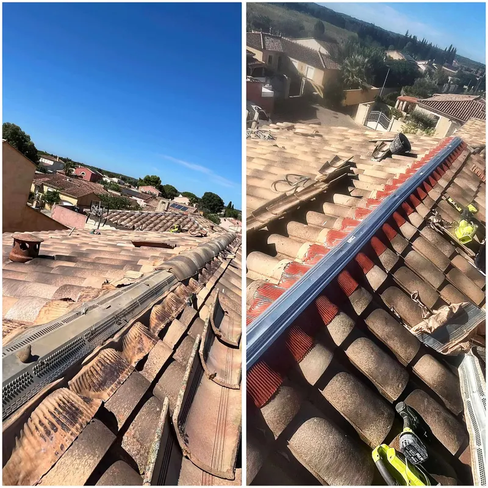
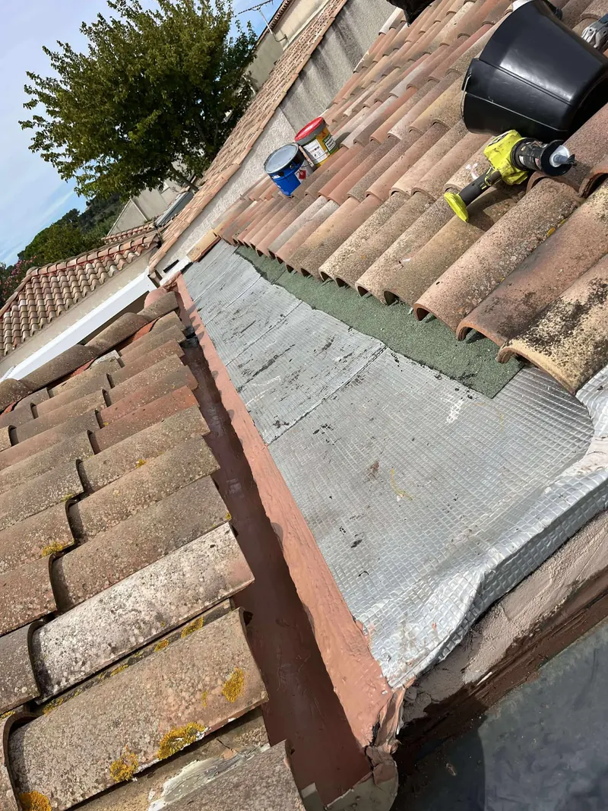
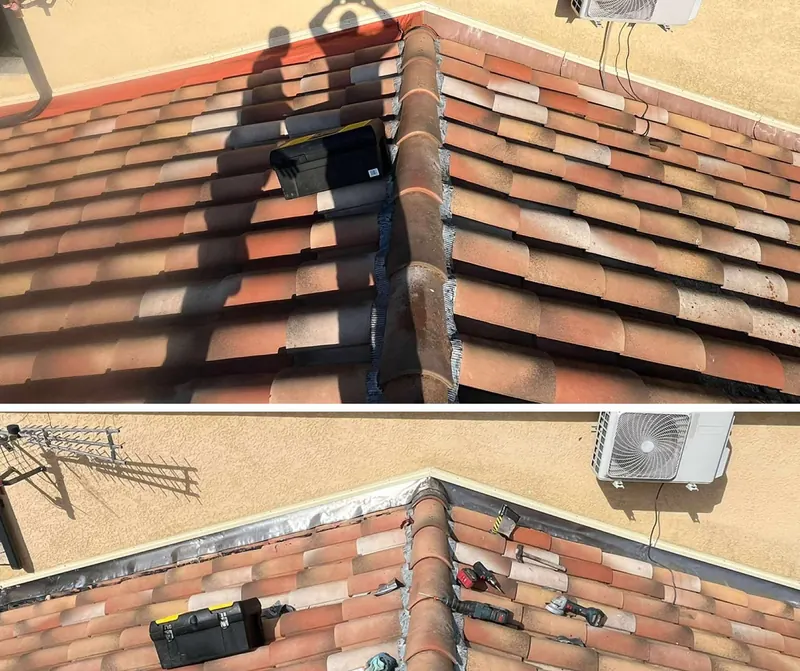
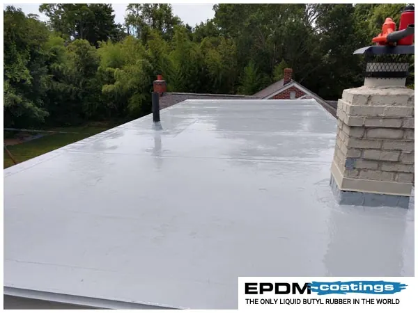

Les signes qui doivent vous alerter
Une fuite de toiture se voit rarement sur le toit lui-même. Elle se voit dedans, souvent loin de l’endroit où l’eau entre : l’eau suit les liteaux, la charpente ou l’isolant avant de goutter.
- Des taches brunes ou des auréoles au plafond, surtout après une pluie
- Une odeur d’humidité dans les combles, un isolant mouillé ou tassé
- Des tuiles glissées, fendues ou manquantes, visibles depuis la rue
- Un faîtage dont le mortier s’effrite ou dont des tuiles bougent
- Des coulures sur la façade sous le bas de pente
- Un toit-terrasse avec des flaques qui ne sèchent pas
À Nîmes, les toitures sont mises à rude épreuve
Le climat nîmois est dur pour une couverture. Les épisodes cévenols de l’automne déversent en quelques heures ce qui tombe ailleurs en un mois : la moindre tuile déplacée laisse passer des litres d’eau. Le mistral soulève les tuiles mal tenues et fait travailler les faîtages. Et les étés brûlants dessèchent les mortiers, qui se fissurent puis se détachent.
C’est pour cela qu’une réparation sérieuse ne se limite jamais à « remettre une tuile » : on cherche pourquoi elle est partie.
Notre méthode, étape par étape
- Diagnostic sur place : inspection de la couverture, des faîtages, des rives, des solins et des points singuliers (cheminée, fenêtre de toit, raccords). Le diagnostic est gratuit.
- Localisation de l’infiltration, depuis le toit et depuis les combles quand c’est possible.
- Réparation à la source : remplacement des tuiles cassées, reprise du faîtage et des rives au mortier ou avec closoir ventilé, reprise des solins.
- Traitement d’étanchéité adapté au support : membrane, résine ou joint, avec des produits professionnels (gamme Sika notamment).
- Contrôle final et photos avant / après, pour que vous voyiez ce qui a été fait là où vous ne montez pas.
Faîtage, rives et toits-terrasses
Une grande partie des fuites que nous traitons dans le Gard viennent du faîtage, la ligne de tuiles qui coiffe le sommet du toit. Le mortier vieillit, se fend, et l’eau s’infiltre au point le plus exposé de la maison. Nous refaisons le faîtage à neuf, au mortier traditionnel ou avec un closoir ventilé qui laisse respirer la toiture.
Les rives, en bordure de toit, posent le même problème. Et sur les toits-terrasses, fréquents dans la région, nous refaisons l’étanchéité par résine ou membrane, avec un relevé soigné sur les acrotères, là où l’eau finit toujours par passer.
En cas d’urgence
Si l’eau entre chez vous, appelez-nous directement au 07 49 87 98 91. En cas de fuite, nous intervenons au plus vite pour mettre la toiture hors d’eau, puis nous revenons pour la réparation définitive.
Nos chantiers en images




Vos questions
Combien de temps faut-il pour réparer une fuite de toiture ?
Une réparation localisée (quelques tuiles, un solin) se fait généralement en une demi-journée à une journée. Une reprise complète de faîtage ou une étanchéité de toit-terrasse demande plus de temps : nous vous donnons la durée exacte avec le devis.
Le diagnostic est-il payant ?
Non. Nous nous déplaçons gratuitement pour voir la toiture et vous remettre un devis, que nous essayons d’envoyer dans la journée.
Les travaux sont-ils couverts par l’assurance décennale ?
Oui. Nos travaux de couverture sont couverts par notre assurance décennale, et nous vous fournissons l’attestation avant le début du chantier.
Où intervenons-nous ?
Basés à Nîmes, nous intervenons dans tout le Gard : Marguerittes, Caveirac, Milhaud, Bouillargues, Rodilhan, Manduel, Redessan, Garons, Saint-Gilles, Bernis, Uchaud et les communes voisines. Voir toute la zone d’intervention.